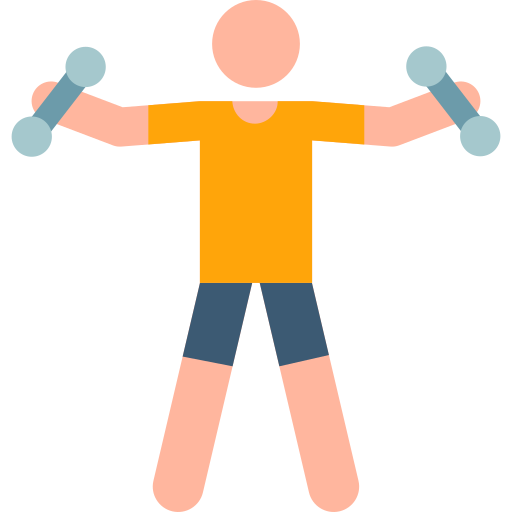

الأنواع المختلفة لتمارين الإطالة
حاول ممارسة بعض تمرينات الإطالة الآمنة واليسيرة المذكورة فيما يلي:
-

تمرين انحناءات الخصر
- قف مستويًا مع المباعدة بين قدميك بمسافة تعادل عرض كتفيك.
- وانحنِ نحو اليمين مع توجيه ذراعك الأيمن لأسفل إلى جانب جسمك و ذراعك الأيسر فوق رأسك. انظر إلى الأمام مباشرة وعد إلى عشرة. ارجع ببطء إلى الوضع المستقيم.
- أعد هذا التمرين مع الانحناء ناحية الجانب الأيسر، وحاول مع الوقت الوصول إلى خمس مجموعات من هذا التمرين.
-

تمرين إطالة الذراعين
- قف بوضعية مستقيمة مع المباعدة بين قدميك بمسافة تعادل عرض كتفيك.
- ارفع ذراعك الأيمن إلى أقصى ارتفاع ممكن مع إبقاء قدميك مسطحة على الأرضية مع العد إلى 5.
- كرر ما سبق مع ذراعك الأيسر.كرر ما سبق مع ذراعك الأيسر.
- كرر هذا التمرين 10 مرات ثم أرخِ ذراعيك.
-

تمرين الدوائر بالذراعين
- قف مع المباعدة بين قدميك بمسافة تعادل عرض كتفيك، مع ثني الركبتين قليلًا.
- ابسط ذراعيك على نحو مستقيم بمحاذاة الكتفين مع بسط الأصابع وإبقاء راحة اليد لأسفل، وحافظ على إبقاء أردافك وبطنك في وضعية الانقباض.
- أدر ذراعيك 10 مرات للأمام و 10 مرات في الاتجاه المعاكس، ثم أرخِ ذراعيك.
- حاول مع الوقت عمل 20 دائرة في كل اتجاه.
-
.svg)
تمرين الجلوس مع ملامسة أصابع القدمين
- استلقِ على ظهرك مع ثني ركبتيك وإبقاء الذراعين منبسطين على الأرضية بجانبك، وأبقِ قدميك مسطحتين على الأرضية، وخذ نفسًا عميقًا واسترخِ.
- اقبض بكلتا يديك على الجزء الخلفي لأحد الركبتين (وليس أعلاها) واسحب لناحية الصدر قدر المستطاع، ثم ارجع إلى وضعية البدء.
- وكرر هذا التمرين مع الرِّجل الأخرى.
-
تمرين الجلوس مع ملامسة أصابع القدمين
- اجلس على الأرضية مع وضع قدميك منبسطتين تجاه حائط مع ثني الركبتين قليلًا، مع بسط يديك وتمديدها ببطء نحو أصابع قدميك واستمر في التنفس.
- كرر ذلك مرتين أو ثلاث مرات كإحماء لبداية التمرين.
- حاول مع الوقت الوصول إلى 10 مجموعات من هذا التمرين.